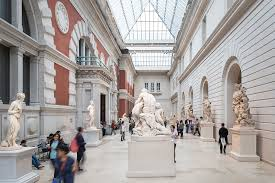
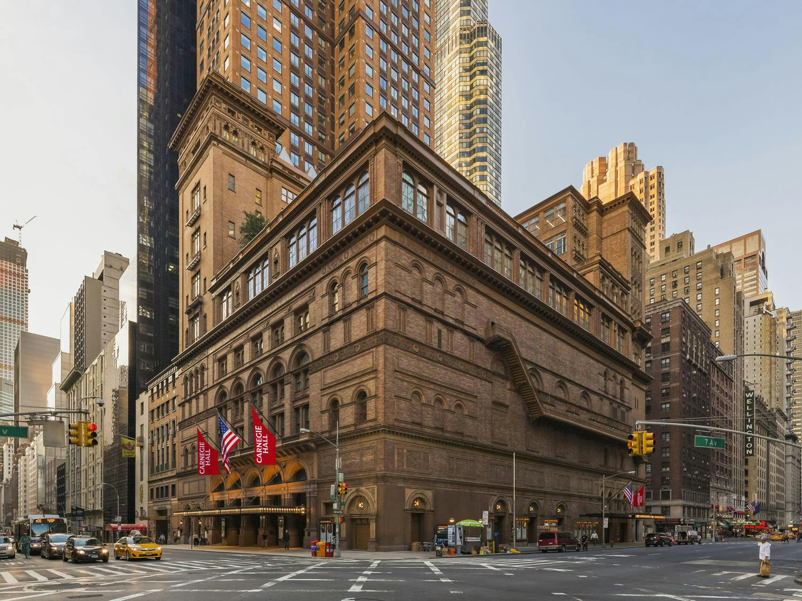
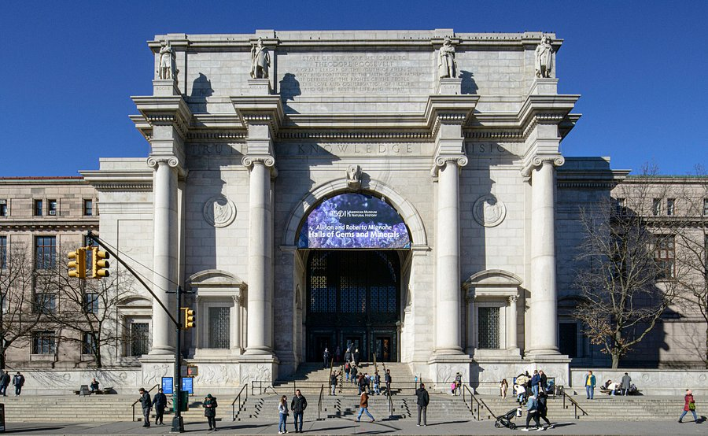

New York City, the city that never sleeps. New York City is a dynamic blend of culture, history, and excitement. From the towering skyscrapers of Times Square and Central Park to iconic landmarks like the Statue of Liberty and Empire State Building, NYC offers something for everyone. Whether you're exploring world-class museums, attending Broadway shows, or enjoying diverse cuisine, New York promises an unforgettable urban adventure.
Home to an extensive collection spanning over 5,000 years, the Metropolitan Museum of Art is one of the world’s premier art institutions. From treasures of ancient civilizations to modern masterpieces, the Met is a haven for art enthusiasts and cultural explorers alike.
Renowned as one of the most prestigious concert venues in the world, Carnegie Hall has hosted legendary performances for over a century. With its unparalleled acoustics and historic significance, this venue is an essential stop for music and performing arts lovers.
As the heartbeat of global finance, Wall Street offers a glimpse into the economic history of the United States. More than just a business hub, it is home to iconic landmarks like the New York Stock Exchange and the famous Charging Bull statue.
A wonderland of discovery, the American Museum of Natural History is celebrated for its fascinating exhibits, including towering dinosaur skeletons, precious gems, and the awe-inspiring Hayden Planetarium.
A universal symbol of freedom and democracy, the Statue of Liberty is a must-visit landmark for travelers from around the globe. Standing tall on Liberty Island, this iconic monument offers breathtaking panoramic views of the New York City skyline.